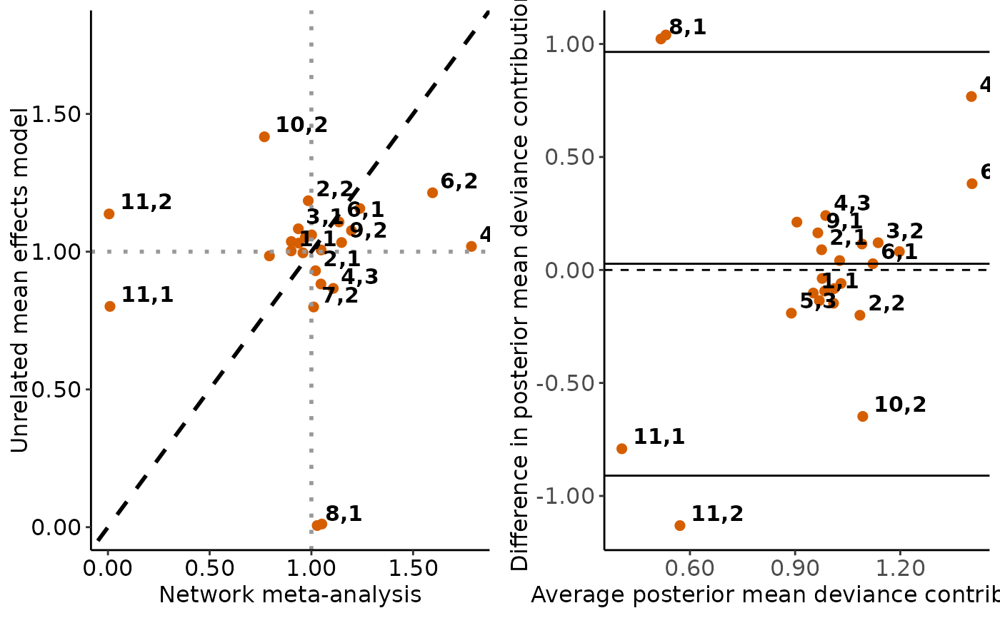
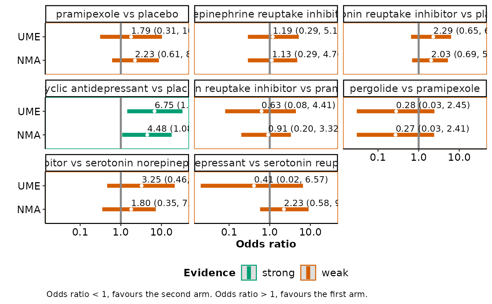

End-user-ready results for the unrelated mean effects model
Source:R/UME.plot_function.R
ume_plot.Rdume_plot hosts a toolkit of functions that facilitates
the comparison of the consistency model (via run_model) with
the unrelated mean effects model (via run_ume) regarding the
posterior summaries of the summary effect size for the pairwise comparisons
observed in the network, the between-trial standard deviation (tau)
and model assessment parameters.
Arguments
- full
- ume
- drug_names
A vector of labels with the name of the interventions in the order they appear in the argument
dataofrun_model. Ifdrug_namesis not defined, the order of the interventions as they appear indatais used, instead.- save_xls
Logical to indicate whether to export the tabulated results to an 'xlsx' file (via the
write_xlsxfunction of the R-package writexl) to the working directory of the user. The default isFALSE(do not export).
Value
ume_plot prints on the R console a message on the most
parsimonious model (if any) based on the DIC (red text). Then, the function
returns the following list of elements:
- table_effect_size
The posterior median, posterior standard deviation, and 95% credible interval of the summary effect size for each pairwise comparison observed in the network under the consistency model and the unrelated mean effects model.
- table_model_assessment
The DIC, number of effective parameters, and total residual deviance under the consistency model and the unrelated mean effects model (Spiegelhalter et al., 2002).
- table_tau
The posterior median and 95% credible interval of tau under the consistency model and the unrelated mean effects model. When a fixed-effect model has been performed,
ume_plotdoes not return this element.- scatterplots
The scatterplot and the Bland-Altman plot on the posterior mean deviance contribution of the individual data points under the consistency model and the unrelated mean effects model. See 'Details' and 'Value' in
scatterplots_devandbland_altman_plot, respectively.- levarage_plots
The leverage plot under the consistency model and the unrelated mean effects model, separately. See 'Details' and 'Value' in
leverage_plot.- intervalplots
A panel of interval plots on the summary effect size under the consistency model and the unrelated mean effects model for each pairwise comparison observed in the network. See 'Details' and 'Value' in
intervalplot_panel_ume.
Details
The deviance information criterion (DIC) of the consistency model is compared with the DIC of the unrelated mean effects model (Dias et al., 2013). If the difference in DIC exceeds 5, the unrelated mean effects model is preferred. If the difference in DIC is less than -5, the consistency is preferred; otherwise, there is little to choose between the compared models.
For a binary outcome, when measure is "RR" (relative risk) or "RD"
(risk difference) in run_model, ume_plot currently
presents the results from network meta-analysis and unrelated mean effects
in the odds ratio for being the base-case effect measure in
run_model for a binary outcome (see also 'Details' in
run_model).
Furthermore, ume_plot exports table_effect_size and
table_model_assessment to separate 'xlsx' files (via the
write_xlsx function) to the working
directory of the user.
ume_plot can be used only for a network of interventions. In the
case of two interventions, the execution of the function will be stopped
and an error message will be printed on the R console.
References
Dias S, Welton NJ, Sutton AJ, Caldwell DM, Lu G, Ades AE. Evidence synthesis for decision making 4: inconsistency in networks of evidence based on randomized controlled trials. Med Decis Making 2013;33(5):641--56. doi: 10.1177/0272989X12455847
Spiegelhalter DJ, Best NG, Carlin BP, van der Linde A. Bayesian measures of model complexity and fit. J R Stat Soc B 2002;64(4):583--396. doi: 10.1111/1467-9868.00353
Examples
data("nma.liu2013")
# \donttest{
# Read results from 'run_model' (using the default arguments)
res <- readRDS(system.file('extdata/res_liu.rds', package = 'rnmamod'))
# Read results from 'run_ume' (using the default arguments)
ume <- readRDS(system.file('extdata/ume_liu.rds', package = 'rnmamod'))
# The names of the interventions in the order they appear in the dataset
interv_names <- c("placebo", "pramipexole", "serotonin-norepinephrine
reuptake inhibitor", "serotonin reuptake inhibitor",
"tricyclic antidepressant", "pergolide")
# Plot the results from both models
ume_plot(full = res,
ume = ume,
drug_names = interv_names)
#> There is little to choose between the two models.
#> $table_effect_size
#>
#>
#> Table: Estimation for each observed comparison
#>
#> |Comparison | Median NMA | SD NMA | 95% CrI NMA | Median UME | SD UME | 95% CrI UME |
#> |:--------------------------------------------------------------------------------------------|:----------:|:------:|:---------------:|:----------:|:------:|:---------------:|
#> |pramipexole vs placebo | 2.22 | 0.65 | ( 0.61, 8.71) | 1.79 | 0.84 | ( 0.31, 10.28) |
#> |serotonin-norepinephrine
#> reuptake inhibitor vs placebo | 1.12 | 0.70 | ( 0.29, 4.78) | 1.18 | 0.72 | ( 0.29, 5.19) |
#> |serotonin reuptake inhibitor vs placebo | 2.03 | 0.51 | ( 0.69, 5.25) | 2.29 | 0.57 | ( 0.65, 6.30) |
#> |tricyclic antidepressant vs placebo | 4.48 | 0.71 | ( 1.08, 17.87)* | 6.75 | 0.79 | ( 1.44, 32.94)* |
#> |serotonin reuptake inhibitor vs pramipexole | 0.92 | 0.70 | ( 0.20, 3.32) | 0.63 | 0.98 | ( 0.08, 4.41) |
#> |pergolide vs pramipexole | 0.27 | 1.13 | ( 0.03, 2.41) | 0.28 | 1.15 | ( 0.03, 2.45) |
#> |serotonin reuptake inhibitor vs serotonin-norepinephrine
#> reuptake inhibitor | 1.81 | 0.76 | ( 0.35, 7.27) | 3.26 | 0.94 | ( 0.46, 21.27) |
#> |tricyclic antidepressant vs serotonin reuptake inhibitor | 2.22 | 0.70 | ( 0.58, 8.99) | 0.41 | 1.42 | ( 0.02, 6.57) |
#>
#> $table_model_assessment
#>
#>
#> Table: Model assessment parameters (25 unconstrained data points)
#>
#> | |Full NMA | UME model |
#> |:---|:--------|:---------:|
#> |DIC |43.52515 | 44.02893 |
#> |pD |18.94214 | 20.13015 |
#> |dev |24.58300 | 23.89878 |
#>
#> $table_tau
#>
#>
#> Table: Between-trial standard deviation
#>
#> | |Median | Lower 95% CrI | Upper 95% CrI |
#> |:---------|:---------|:-------------:|:-------------:|
#> |Full NMA |0.5907608 | 0.0370939 | 1.541924 |
#> |UME model |0.5992070 | 0.0354797 | 1.633918 |
#>
#> $scatterplots

#>
#> $leverage_plots
#>
#> $intervalplots

#>
# }